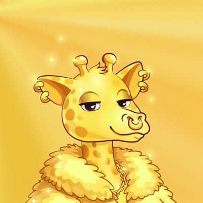

Giraffies
Cultural NFTs Powering Identity, Access, and Participation
Giraffies are not just digital art - they are your entry point into the Loculus ecosystem.
Giraffie NFT is like: your identity + your pass + your role inside the network.
Each Giraffie represents you onchain.
It links to your wallet. It shows you're part of ecosystem. It can carry your reputation over time.
Instead of just a username, you have a verifiable digital identity.
Holding a Giraffie can unlock:
- exclusive features
- early access to tools or products
- private communities or opportunities
It works like a key to different parts of Loculus.
Giraffies allow you to be active, not just present.
- join campaigns
- interact with agents
- take part in the ecosystem
- potentially earn rewards
You're not just watching - you're involved.
Because it's not only utility - it also builds:
- community
- identity
- shared culture
People recognize it, relate to it, and rally around it.
Without something like Giraffies: users are just wallets, there's no strong identity or community layer.
With Giraffies: identity becomes visible and meaningful. Participation becomes rewarded and trackable.
Giraffies connect: users → agents → economy.
They act as the human layer in an agent-driven system.
Giraffies are NFTs that give you identity, unlock access, and let you actively participate in the Loculus ecosystem.
